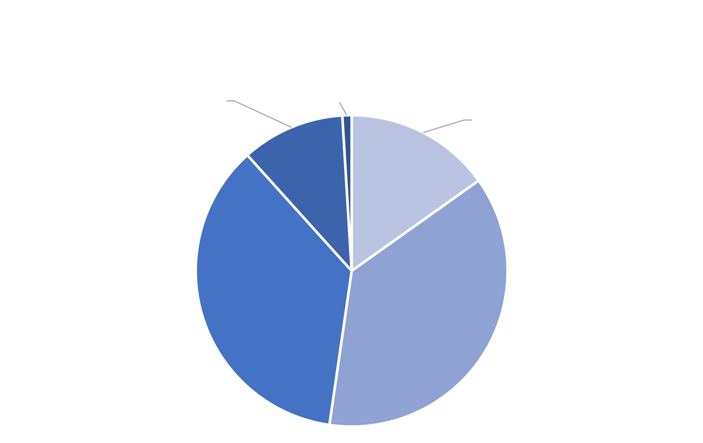
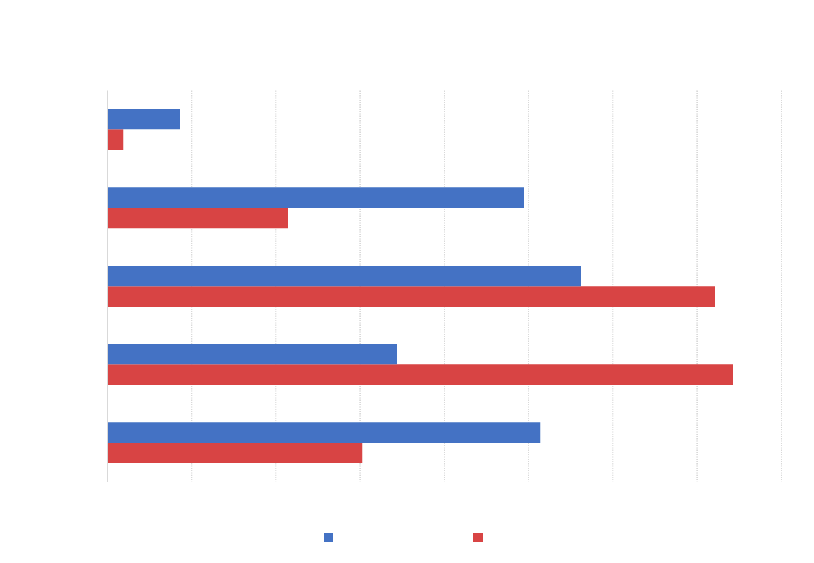
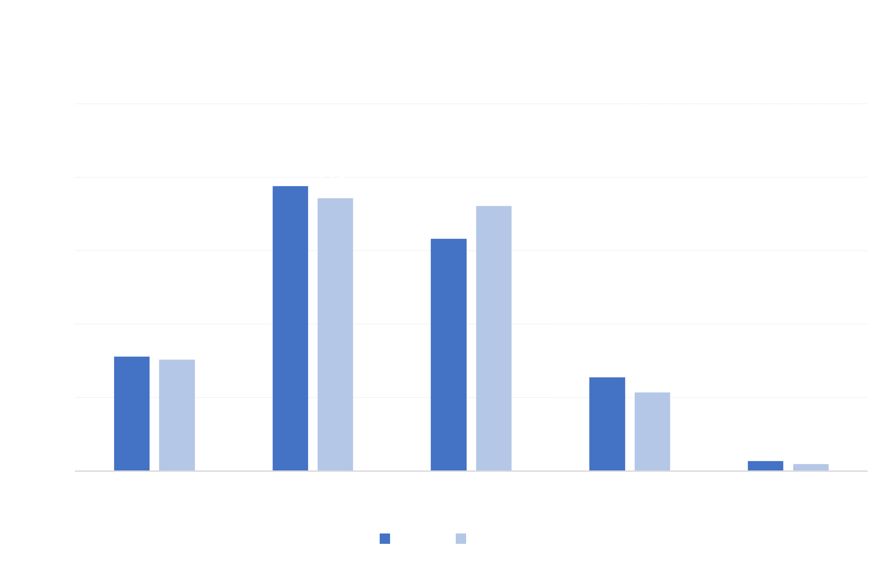

Queens Analysis

In Queens, the proporiton of arrests across demographic groups is a lot more dispersed. Asians make up 15% of the arrests, White is 11%, while Hispanic and Black are nearly equal at 36% and 37% respectively.

The chart above compares each demographic group's overall proportion in the composition of the borough with the proportion of arrests on the demographic group within the borough. In Queens, Hispanic and Black individuals are disproportionately arrested when compared to their overall population proportion. While Hispanic individuals only comprise 28% of the overall population, they constitute 36% of the arrests. Black individuals are just 17% of the overall population, but 37% of the arrests.

There have been slight changes between June 2019 and June 2020 in the arrest composition across demographic groups in Queens. Asian, Black, and White arrests lowered, while the Hispanic demographic group experienced a 4% increase in arrests over the year.